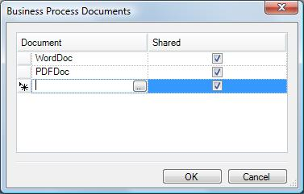
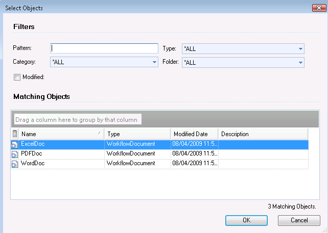

It allows determining which documents will be associated with the process through a dialog that shows all the documents defined on the Knowledge Base. Description
By clicking this button this dialog appears:  Then clicking the same button over the lines the dialog that shows the knoweledge base documents definition will be shown:  Then the process can be propagable or not (using "share" option), this means that the documents definitions will applied for the subprocess or not. See Also
|
| Backlinks |
| Business Process Diagram Properties |